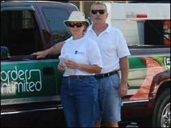

Home/Meet Bill & Debbie Vanderlip
Meet Bill & Debbie Vanderlip
Borders Unlimited is an independent, family-owned concrete curbing business based in Simcoe, Ontario.
Bill handles your installation
Born and raised in Simcoe, Bill has worked with residential and commercial concrete since the early 1970s. He visits the property, measures the work and installs the curb you plan together.
Debbie looks after the office
Debbie manages the day-to-day business. Questions about an estimate, installation or warranty go directly to Bill and Debbie.

Working across four counties
We install residential and commercial borders in Norfolk, Haldimand, Brant and Oxford Counties. Our gallery includes gardens in Simcoe, Waterford and Port Dover, as well as commercial installations and public spaces.
Have a border in mind?
We’ll walk the property with you and measure it for a free written quote.